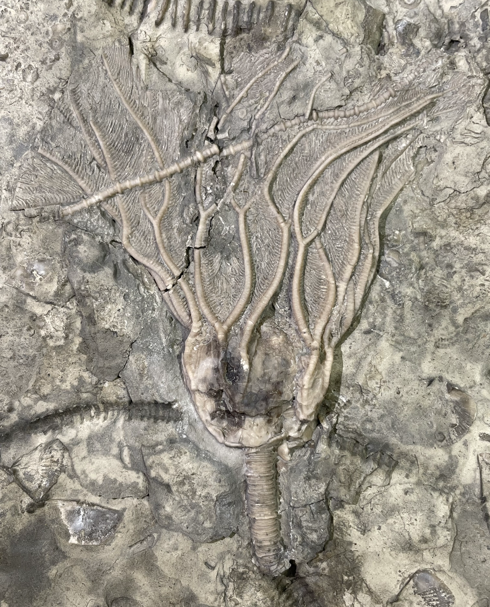
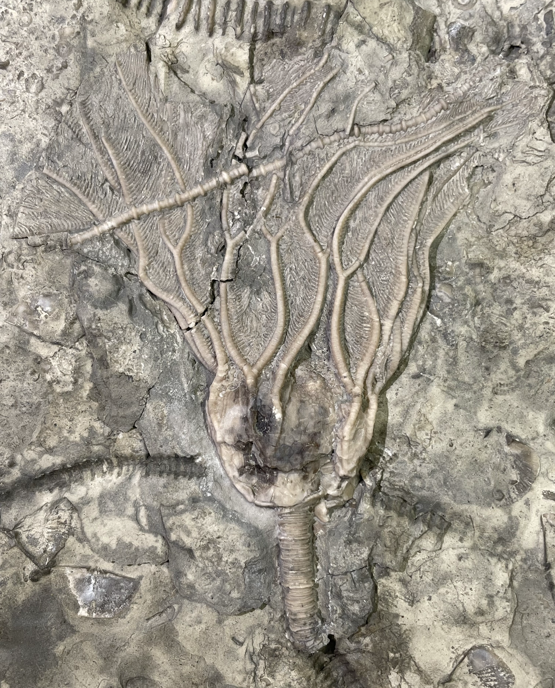

1. Glyptocrinus ramulosus
2. Archaeocrinus sundayae
3. Praecupulocrinus conjugans
• Ordovician
• Bobcaygeon Formation
• Tomlinson Quarry, Brechin, Ontario, Canada
Size: 7 cm crown for the Glyptocrinus


 
